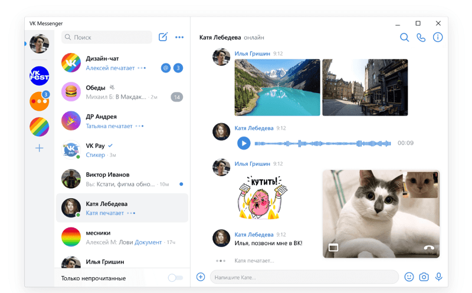
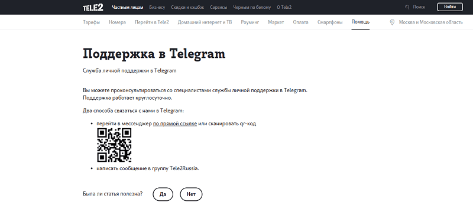

Старые методы рекламы теряют свою актуальность с каждым днем. Сегодня мобильный messenger набирает обороты. Развитие технологий, создание новых инструментов и форматов в интернет-маркетинге оставляет позади емейл-рассылку и смс. Они уже давно начали показывать спад эффективности и перестали приносить значимую прибыль. Сейчас на замену пришел мессенджер-маркетинг, который стремительно набирает популярность как в мелких, так и в крупных компаниях. В статье разбираемся, что такое мессенджер-маркетинг, почему он так эффективен и как его использовать на пользу бизнесу. Можно ли просто закончить курсы или нужно обучение. Статья будет полезна и новичкам, и профи.

Что такое мессенджер-маркетинг
Мессенджер-маркетинг подразумевает использование чат-ботов для построения общения с потенциальными клиентами, и обмена информацией. Для поддержания связи с аудиторией используют такие приложения как Facebook, Телеграм, ВКонтакте, Viber или Whatsapp.
В сравнении в емейл маркетингом, мессенджеры выгоднее с позиции вложения-отдача. Если ваши заказчик не отвечают на звонки и не читают сообщения на почте, или расходы на смс необоснованно дорогие, а низкая вовлеченность в соцсетях не дает возможность развить рекламу — мессенджеры станут надежным источником заказов.
Почему мессенджер лучше email-рассылок?
- Высокий open rate. Мессенджеры более персонализированы и приятны людям, нежели почта. Как правило, людям нравится получать сообщения в мессенджерах из-за приятных ассоциаций, обычно в мессенджер сообщения интересны пользователю и важны. Значит такое отношение отражается и на рассылку, показатель открываемости примерно 80-90%. Сообщения точно будут доставлены вашей целевой аудитории, а open rate (ROI)будет значительно выше, чем у email. Поэтому вкладываться в мессенджер-маркетинг всегда более эффективно, чем в рассылки на e-mail.
- Мессенджеры позволяют быстрее познакомиться с клиентами и сегментировать базу. Мессенджеры — это приложения для полноценного общения, там на сообщения принято отвечать. В то время как для почты ответы несвойственны и скорее являются исключением. При использовании почты для уведомления пользователей или отправки опроса, вы получите едва ли 10 ответов из 1000 сообщений. Хотя там также стоит нажать одну кнопку.
- При правильном оформлении промо и продуманных вариантах ответа, вы получите информации в разы больше, чем от email за короткий промежуток времени. Маркетолог может потратить полгода, пытаясь провести пользователя по воронке в email, но в мессенджерах вы можете получать информацию через маркетинговую воронку в 10 раз быстрее, просто отправляя сообщение и отслеживая реакцию.
При грамотном подходе, мессенджер-маркетинг позволит получить информацию о потенциальных клиентах максимально точечно и в полном объеме.
Например, вы можете спросить пользователя:
- У вас есть дети или питомцы?
- Хотите снять выгодно дом или квартиру?
- Хотите больше узнать о “ваш товар или услуга”?
Объём и тип данных, которые вы можете собрать через мессенджер, обширен и помогает разделить людей по интересам, профессиям и даже по специфическим жизненным ситуациям (например, при поиске жилья). Мессенджеры позволяют двигать клиента через воронку гораздо более надёжным, безопасным и дружелюбным способом, чем электронная почта. Информацию, которую вы получите о пользователях нужно грамотно распределить и применить на благо компании. Подробнее этот момент разберем ниже.
Какие задачи можно решать с помощью мессенджеров
Мессенджер-маркетинг эффективно решает проблемы бизнеса, позволяет качественно взаимодействовать с клиентами и привлекать новых. В сравнении в емейл маркетингом, мессенджеры выгоднее с позиции вложения-отдача. Если ваши заказчик не отвечают на звонки и не читают сообщения на почте, или расходы на смс необоснованно дорогие, а низкая вовлеченность в соцсетях не дает возможность развить рекламу — мессенджеры станут надежным источником заказов. Разберем поэтапно, для чего нужен мессенджер бизнесу.
{kind=link}
Снижение затрат на генерацию лидов
- Минимум вложений, что позволит даже начинающему бизнесу активно пользоваться услугой.
- Дешевле контекстной рекламы и можно делать рассылку, статьи сразу для привлечения аудитории и получая прибыль.
- Можно работать с инфлюенсерами, что позволит сэкономить. Например, на всем известной площадке Telegram есть множество блогеров, которые активно рекламируют продукцию и курсы. Среди них можно найти выгодные предложения.
- Со временем не снижается эффективность маркетинга в мессенджерах, даже через несколько лет можно получать прибыль, которая растет. Как по охвату аудитории, так и по её вовлеченности, показатели остаются в примерно одном диапазоне.
Проводить клиентов по воронке продаж (реализовать целевые рекламные кампании):
- спроектировать воронку поэтапно
- создать нужный контент — лидмагниты, посты и тд
- собрать автоворонку в конструкторе чат-ботов
- наладить процесс лидогенерации, чтобы в верхней части всегда были новые пользователи
- посчитать эффективность и автоматизировать
Оптимизация работы с клиентами и получение
- Разгрузка менеджеров и автоматизация их рутинных задач. Консультация клиентов без нагрузки менеджеров.
- Моментальный ответ клиентам на соов любое время суток с помощью чат-бота.
- Сбор базы потенциальных клиентов и ее кластеризация.
- Сбор информации о клиентах с помощью опросов и истории заказов.
- Увеличение времени взаимодействие с компанией.
- Упрощение заказа услуг и консультаций.
- Отправка информации с целью создать заинтересованность в повторной покупке, возврат старых заказчиков.
- Прогрев аудитории контентом, уведомление о действующих предложениях.
- Разнообразить систему каналов распространения продуктов.
- Быстрый прием платежей. Для оплаты лучше направлять пользователя сразу на страницу сайта, или можно настроить чат-бота для отправки инвойса (счета) после того, как пользователь отправляет товар в корзину. Тогда клиент сможет указать свои данные прямо в мессенджере и оплатить.
- Геймификация и персонализация коммуникации.
- Разделение аудитории на сегменты.
- Рассылка простых технических уведомлений: о поставке, статусе платежа и т.д.
- Получать обратную связь. Например, используя Чат-боты, опросы, формы.
- Внутрисетевое общение с клиентом.
Работа над брендом
- Повышение узнаваемости продукта.
- Работа над узнаваемостью бренда.
- Привлечение интереса к продукту.
Мессенджер-маркетинг должен работать автоматически, но его иногда необходимо модерировать и анализировать. А также – отслеживать ограничения мессенджеров и оперативно вносить все нужные корректировки. С Google Tag Manager (GTM) получится качественно и быстро анализировать.
Рассылка должна дополнять бота. Картинки и пелену текста лучше не использовать. В рассылках рекомендуется использовать минимум текста. Он должен имитировать начало диалога в мессенджере, быть подобным общению между людьми. А когда уже человек ответит – вести на цепочку, где размещено то количество контента, которое поможет провести пользователя дальше.
Кому подойдет мессенджер-маркетинг
Общение в мессенджерах – универсальный способ взаимодействия с потребителями, который подходит любому бизнесу b2c сегмента. Например, малому бизнесу (ИП) для записи на прием или оформления заказа. Или для розничных продавцов, которые могут делать рассылки о новинках и акциях.
Мессенджер-маркетинг подойдет самому разному бизнесу, вот некоторые для примера:
- Интернет-магазинам любого направления.Подбор товара и размера, подтверждение заказа, ответы на вопросы, оперативная помощь покупателям, информирование о дисконтах и акционных предложениях.
- Образовательные проекты и онлайн-школы, консультации. Чат-ботов удобно использовать для регистрации на тренинг или обучающий курс. Можно создавать уведомления с акциями, расписаниями уроков, новинками и советами.
- Здоровье и красота, фитнес и салоны красоты — запись на приём, напоминания о записи, советы и онлайн консультации, продажа абонементов.
- Финансовые организации и банки — ответы на быстрые вопросы, помощь в поиске ближайшего отделения и информирование о статусе клиента.
- Службы логистики, доставки товаров — отслеживание посылки и информации о ней.
- Службы связи и телекоммуникаций. Рассылка новостей, сообщения о статусе счета или техподдержка(как в ТЕЛЕ2).
- FMCG бренды и digital агентства — конкурсы, поиск клиентов, игровые механизмы.
- Питание — службы доставки еды и разных продуктов, рестораны и суши. С помощью Чат-ботов можно заказать еду на дом, ознакомиться с меню, забронировать место или узнать об акциях.
- Кинотеатры, например как “КАРО”, сообщают о новинках и премьерах, акциях.
- СМИ для новостей. К примеру, издание МЕДУЗА в телеграм.
- Туризм — подбор направлений и тура, покупка билетов, бронирования отелей и автомобилей, рассылки с полезными новостями.
- Оффлайн-услуги — поиск новой аудитории и расширения бизнеса.
Маркетинг в мессенджерах вряд ли принесет пользу b2b сегменту, но однозначно станет полезной находкой для мелкого и среднего бизнеса, которые физически не успевают обрабатывать и «подогревать» базу своих клиентов. Данное решение поможет автоматизировать часть процессов, освободить время на развитие бизнеса и сократить траты.
Что включает в себя и как работает мессенджер-маркетинг?
Mессенджер-маркетинг делится на несколько фундаментально важных этапов.
{kind=link}
Сбор трафика
Есть несколько вариантов сбора трафика, но самое главное — согласие пользователя на обработку его персональных данных.
- Таргет в социальных сетях, который направляет напрямую с диалог компании.
- Email-рассылки — кнопка для перехода в диалог сообщества.
- Шапка профиля компании в соц сетях. Когда вместо ссылки на сайте, стоит ссылка на мессенджер.
- Форма обратного звонка на сайте сохраняет номер пользователя.
- Офлайн мероприятия. Такие контакты собирают на живых мероприятиях при заполнении анкет, можно также с помощью QR кода.
- Геймификация — обычно при участии в квестах или гивах.
- Виджеты чатов на сайте/лендинге.
- POP UP — всплывающее окно с вашими контактами.
Создание автоворонок и чат-ботов
Чат-боты представляют собой программы, что работают по заготовленному сценарию в мессенджерах. Бот проводит клиента так, чтобы он рано или поздно совершил целевое действие. Чат-боты бывают необучаемыми с единым заготовленным сценарием и обучаемыми — наделенными искусственным интеллектом, благодаря чему могут гибко реагировать на поведение и ответы.
{kind=link}
Автоворонки представляют собой систему рассылок пользователям от чат-ботов, но с включением в диалог реальных специалистов.
Рассылки в мессенджерах
Эффективный способ напомнить о компании. Помните основы: сообщения должны быть ясными, короткими и по сути. В этом случае клиент быстро воспримет всю информацию и не сочтет ее за спам.
Обработка лидов
Входящие и вступившие в коммуникацию с ботами клиенты разбиваются по категориям. Сегментация может быть в автоматическом режиме — с помощью настроенного заранее сценария, или ручного типа — с участием специалиста там, где нужен спец.анализ ответов. В созданных категориях выделяются уровни лидов в зависимости от степени готовности к заказу. Это влияет на дальнейшую коммуникацию: предлагать ли пользователю офферы или продолжать подогрев контентом, акционными предложениями или другими методами.
Создание стратегии
Для разработки стратегии зачастую привлекают тех, кто специализируется на данной нише и продвижении. Например, CRM и email-маркетологи, SMM-специалисты, менеджеры по продажам. Сам процесс проработки стратегии состоит из нескольких важных этапов.

Постановка цели
С этого начинается фундамент любой стратегии.
Вам стоит выбрать одну или несколько приоритетных целей:
- увеличение объема продаж, а также количества заказов;
- сбор информации об аудитории, чтобы определить предпочтения и сегментировать;
- повысить узнаваемость вашего бренда;
- автоматизировать максимум бытовых процессов за счет ботов.
От выбранных пунктов будут зависеть шаги. Чтобы полноценно оценить результат внедрения стратегии, необходимо зафиксировать стартовые показатели.
Выбор механик вовлечения
Чат-бот не единственный способ вовлечения, хотя и главный. Стоит рассмотреть и другие:
- персонализацию. Подменяйте контент с учетом информации, которая у вас есть о пользователе;
- всплывающее окно. Предлагайте перейти к общению в мессенджерах и чатах, используйте мотивирующие предложения;
- лид-магнит. Создавайте полезный и главное уникальный контент, который можно получить при общении с ботом;
- упущенная выгода. Формируйте определенную ценность, ограниченную по времени;
- виджеты. Дайте возможность перехода с помощью соответствующего виджета на сайте.
Выбор каналов
Конечно можно зарегистрироваться сразу во всех мессенджерах, но для начала стоит определиться с какого начать. Лучше выбирать тот, где больше именно вашей ЦА или возрастной группы. Это убережет от лишних потерь времени и денег.
Варианты:
- WhatsApp(Ватсапп). На данный момент самый популярный мессенджер, который установлен у 40% пользователей интернета по всему миру. Для бизнесов разработана специальная программа – WhatsApp Business, где есть возможность настраивать приветственные послания и автоматические ответы.
- Telegram(телеграм). Им пользуется порядка 50 000 000 людей из России. Здесь можно вести каналы и настраивать/интегрироваться с CRM чат-ботами. Соцсеть разрешает размещать статьи, есть возможность проводить курсы.
- Viber(Вайбер). Довольно популярный и простой в пользовании мессенджер. Многие компании ведут тут сообщества или делают рассылки разного типа, настраивают быстрые ответы и подключают чат-ботов.
- Facebook мессенджер. Мессенджер охватывает около 21 000 000 русскоязычных пользователей и дает множество маркетинговых возможностей. Например, работу с целевыми объявлениями в новостных лентах, рассылку сообщений, ботов.
Если вы планируете начать вести сразу несколько каналов, рекомендуем задействовать агрегатор мессенджеров. Он объединяет заявки из разных источников в едином интерфейсе. Такой вариант помогает четко отслеживать все заявки.
Поиск сервиса для оптимизации
Оптимизация необходима для быстрого внедрения Чат-бота в нужные каналы. Специальные приложения позволят сделать это самостоятельно, без помощи нишевых специалистов.
Варианты:
- BotFather. Действенный инструмент, который поможет создать Чат-ботов в Telegram за 10 минут. Приложение содержит подсказки и гибкие настройки для редактирования, также есть функция интеграции в иные сервисы;
- MobileMonkey. Сервис предназначенный для разработки ботов в Facebook мессенджер. Бесплатно можно отправить 1 000 сообщений в месяц любым подписчикам. Изменять сценарий можно на протяжении всего времени;
- SendPulse. Сервис для создания чат-ботов в VK, WhatsApp, Telegram, Facebook, Instagram. Предлагает много продвинутых функций. В бесплатном формате можно отправлять до 10 000 уведомлений за месяц 1 000 подписчикам;
- ManyChat. Работает в WhatsApp, Facebook, Instagram. Легко прописывать этапы коммуникации, а также настроить быстрые и полноценные ответы.
Проработка шагов и сценариев
Автоматическая воронка продаж неотъемлемая часть стратегии в маркетинге. Это проработанный сценарий, что ведет потенциального покупателя пошагово к нужной нам цели — покупке.
Пример простой схемы:
- Привлечение внимания рекламой.
- Раздача лид-магнита для повышения лояльности.
- Выгодное предложение на покупку.
- Звонок менеджеров или ссылка на сайт интернет-магазина для оформления покупок.
Схема примерная, ее можно и нужно менять под конкретного клиента, с учетом всех известных о нем данных.
Как повысить эффективность инструмента:
- Рассылку делайте только для тех, кто согласился на нее.
- Улучшайте бота, свои сценарии и заготовки. Для этого анализируйте отзывы и обращения клиентов.
- Добавляйте в сценарии голос бренда и/или логотип компании. Это улучшит узнаваемость бренда.
- Подготавливая сценарий, ориентируйтесь на карту путешествия пользователя. Это покажет, на каком этапе воронки находится пользователь, когда пишет в чат, и предскажет варианты его поведения. Так можно подобрать самый подходящий момент для выдачи оффера.
- Используйте таргет.
- Желательно создавать разный контент и сценарии для чатов/каналов.
- Дополняйте мессенджер-маркетинг другими нишами – email, sms, call-центр, онлайн-чаты на сайте.
- Разместите ссылку на мессенджеры на всех своих сайтах.
Преимущества и недостатки
|
Среди однозначных плюсов стоит выделить: |
Несмотря на такое количество положительных сторон, есть и свои минусы: |
|
|
Даже с этими недостатками мессенджер-маркетинг один из самых эффективных вариантов для общения с клиентами, о чем мы расскажем в статье.
Инструменты мессенджер-маркетинга
При правильном использовании инструментов можно расширить целевую аудиторию, сегментировать продукцию, увеличить объем продаж. Существует несколько эффективных инструментов, заслуживающих внимания.

Чат-бот
Инструмент для обмена сообщениями, настройки автоматических ответов пользователям. Помогает выстраивать лояльность, собирать и распределять шаблоны по веткам, в зависимости от вопроса и реакции. Возможно запустить при помощи кнопок, либо как реакцию на заданные ключевые слова. Чат-бот с искусственным интеллектом может отвечать на запросы, сформированные в произвольной форме.
Рассылки
Предполагает рассылку сообщений в массовом порядке. Услуга распространяется только на клиентов, которые дали официальное согласие на ее получение. Рассылки встречаются нескольких видов:
- текстовые статьи;
- с графическими элементами;
- графические.
Например: клиентам, которые постоянно заказывают суши, можно в качестве поощрения подарить купон или скидку.
Каналы и сообщества
Самым популярным инструментом на сегодняшний день является Телеграмм. Можно продвигать товары и услуги через отдельно созданный канал или сообщество. Там можно размещать статьи и графический контент, видео. По последним данным все больше целевой аудитории начинает пользоваться услугами компаний, что работают в социальных сетях.
Чаты
Чаты предполагают общение клиентов, обмен новостями. По желанию, пользователь может выбрать открытый или закрытый формат. Последний вариант предполагает доступ только приглашенным пользователям.
Реклама в ленте, нативка, баннеры
Разместить рекламу и баннеры возможно в Viber или Skype. В мессенджерах редко, когда происходит размещение баннеров. Чаще всего она выступает в роли нативных публикаций, что не вызывает недовольства у пользователей.
Прямые продажи
Несмотря на то, то что главная цель мессенджеров – это общение, нередко их используют для организации продаж. Можно подключить Сбербанк, Яндекс. Кассу и другие площадки. Реализация продаж происходит через сгенерированную кнопку «купить». Некоторые мессенджеры предлагают свои варианты оплаты. Об этом будет ниже в статье.
Среди перечисленных инструментов остается только подобрать оптимальный вариант для каждого бизнеса.
Мессенджеры и возможности
Рассмотрим какой мессенджер выбрать на примере популярных в России.
{kind=link}
- Профиль компании — описание, рабочие часы и локация, email и ссылка на сайт.
- Каталог. Можно добавить популярные товары с фото, описаниями и ценами, код товара. Пользователь сможет быстро выбрать подходящий товар.
- Приветственное сообщение, которое автоматически получит пользователь в чате.
- Сообщение “Нет на месте”, которое отправляется автоматически клиенту, если он написал, а вы не на связи.
- Быстрые ответы. Фразы с ответами на частые вопросы можно сохранить и пометить цифрой или короткой фразой.
- Ярлыки. Помогут систематизировать клиентов: например, отделить оплативших заказ.
- Короткая ссылка. Ватсап генерирует короткую ссылку, чтобы было удобно делиться с пользователями для приглашения.
Важно! WhatsApp Business может находиться только на одном смартфоне. Если нужно решение более масштабное, то следует изучить возможности WhatsApp Business Api.
Telegram
Возможности для маркетинга:
- Чаты с официальными представителями компании.
- Канал. Это лента постов, на которую пользователь может подписаться и следить за новостями. Работает как прогрев для клиента.
- Групповые чаты. Клиенты могут обмениваться отзывами, повышает вовлеченность.
- Боты. Пользователь может ввести запрос из списка и получить нужный ответ. Настраивать их в телеграмме проще всего.
- Стикерпаки. Можно сделать авторские стикерпаки, которые клиенты смогут использовать в диалогах.
- Обычные аккаунты.
Skype
Имеющиеся инструменты:
- Таргетинг. Можно осуществлять отбор по нескольким критериям.
- Технические требования к баннеру. Один экран — одно сообщение.
- Возможные места размещения. Скайп предлагает много вариантов, которые зависят от конкретно рекламной единицы.
Viber
- Паблик чаты, схожие с новостными лентами.
- Паблик-аккаунты.
- Стикерпаки.
- Аккаунты с рассылкой.
- Обычные аккаунты.
- Баннерная реклама.
FB мессенджер
Хорошо приспособлен для продаж в приложении: можно подгружать товары и указывать стоимость, готовить описание. К тому же есть синхронизация данных со складами. Есть каналы, которые можно адаптировать для полноценной воронки продаж.
Fb мессенджер можно установить на сайт. С помощью виджета страницы Facebook гости сайта смогут написать сообщение администратору страницы компании. Этот инструмент можно использовать в качестве альтернативы чатам формата Jivosite.
QQ и WeChat
Приложение подкупает многофункциональностью и простым управлением: с его помощью можно по одной кнопке отправлять текстовые сообщения, а также звонить по видеосвязи и делиться видео/фото.
VK мессенджер

Есть большое разнообразие полезных маркетинговых инструментов: рассылка по номерам, автоматическая воронка, товары и витрина (в самой соцсети). Преимущество в том, что вы можете настроить таргетинг очень тщательно. Здесь не только привычные социально-демографические параметры, но и похожие аудитории, текущие клиенты, подписчики разных компаний, подписчики сообществ/групп. Можно расплачиваться прямо внутри мессенджера. Пока что — только с VKPay. Ну и есть неплохие возможности для интеграции чат-ботов.
Сервисы для мессенджер-маркетинга
Список приложений:
- Textback. Сервис, предлагающий отправку уведомлений. Характерная особенность – большое количество ботов, поддерживающих разнообразные мессенджеры;
- livetext. Платформа подойдет компаниям, которые занимаются продажами товаров и услуг, планируют запустить консультирование и наладить коммуникацию. В одной платформе присутствуют инструменты не только для мессенджеров, но и социальных сетей;
- chat2desk. Один из лидеров. Кроме поддержки общего чата, можно создать поддержку для Skype, VK, Whatsapp, Viber, Instagram, FB и конечно Telegram. Присутствуют удобные виджеты. Оптимальное решение, для кого важен API;
- pact. Удобная платформа, позволяющая вести переписку с клиентами. Согласно информации от разработчиков, позволяет увеличить оборот продаж в 10 раз в течение 2-х лет. Заключение сделок занимает на 40% меньше времени;
- blinger. Еще один веб-сервис, позволяющий упростить процесс коммуникации с клиентами через WhatsApp мессенджер, Viber, Telegram мессенджер, Facebook мессенджер и ВКонтакте.
Перечисленные агрегаторы обладают всем необходимым функционалом, чтобы упростить процедуру оформления заказов и своевременно давать обратную связь клиентам.
Конструкторы чат-ботов
Среди зарекомендовавших конструкторов ботов можно выделить следующие:
- botkits. Предлагает разработку ботов с многофункциональными возможностями для реализации различных задач. Работает с основными мессенджерами Viber, Telegram и социальными сетями ВКонтакте, Facebook, Одноклассники. Не требует специальных навыков программирования;
- chatforma. Один из самых доступных конструкторов для чат-бота. Каталог насчитывает свыше 74 000 ботов. Можно автоматизировать бизнес процессы и увеличить объемы продаж при помощи ботов Telegram, ВКонтакте и Viber;
- salebot. Сервис предлагает услуги по созданию и внедрению ботов с использованием искусственного интеллекта. Дает возможность качественной автоматизации в приложениях и мессенджерах;
- konverbot. Это конструктор, который помогает решить несколько задач: налаживать коммуникацию с клиентами, интеграция CRM, а также использование совместно с Битрикс24. Присутствует функционал тестирования ботов;
- aimylogic. Это мощный конструктор, оснащенный искусственным интеллектом. Дает возможность создать смарт-бота, который будет воспроизводить человеческую речь.
Примеры использования
Для круглосуточной поддержки
- оператор связи Теле2 оказывает поддержку в канале Телеграмма, круглосуточно готов оказать помощь пользователям своей сети, уведомляет о статусе;
- авиакомпания Нидерландов Transavia наладила коммуникацию с пассажирами через мессенджер Whatsapp;
- канал BBC делает рассылку свежих новостей через Whatsapp.

Распространение коммерческого контента
- Издание Mashable пользуется в Viber публичными открытыми чатами для людей;
- компания Терралинк наладила информирование клиентов через канал Телеграмм;
- информирование людей через ботов использует всемирно известное издание Meduza;
- стандартное решение: применение кнопок шаринга.
Коммуникация с новыми и постоянными клиентами
- Absolut бренд реализовал хрестоматийный проект через WhatsApp;
- классические инструменты можно использовать в Facebook мессенджер;
- настройка групповых чатов в Телеграмме.
Использование операций
- помощь профессиональными ювелирами в подборе украшений через мессенджеры WhatsApp и Viber;
- компания Apple занимается приемом платежей через WeChat;
- уже несколько лет можно заказывать еду из ресторанов через Whatsapp;
- Яндекс предлагает использовать нового бота через Телеграмм при возникновении вопросов;
- можно искать товары через бота на Алиэкспрессе.
Как правильно общаться с клиентами в мессенджерах
Для качественного общения с клиентами и высокой конверсии следует соблюдать основные правила:
{kind=link}
- Всегда ориентируйтесь на своих клиентов и их потребности.
- Не спамьте, старайтесь найти баланс в отправке сообщений.
- Не пишите слишком длинные сообщения, они выглядят отталкивающе. Система принимает их как спам.
- Давайте возможность ответить вам.
- Отправляйте только важную и интересную пользователю информацию
- Если человек недоволен — расскажите, как отписаться от промо. Иначе могут поступить жалобы, за это “спасибо” не скажут.
- Организуйте обратную связь: оценка покупки, важности сообщений, вежливости клиентов и так далее.
При общении в мессенджерах также очень важно учитывать:
- Юридическую составляющую. Например, нельзя делать рассылку, если пользователь не давал на это разрешение.
- Точку зрения пользователя. Например, не нужно отправлять уведомления в час ночи.
- Спам и политика мессенджеров. Сюда входят и длинные сообщения, и частые навязчивые промо.
Соблюдая все правила, вы быстрее найдете постоянных клиентов и повысите их лояльность.
Как продавать в мессенджерах
Продажи в мессенджерах можно разделить на несколько шагов. Для начала нужно определить и освоиться в приложении, собрать первичную аудиторию и начать работу. Разберем подробнее каждый шаг:
{kind=link}
- Выбор подходящего приложения. Первостепенно выбор зависит вашей целевой аудитории и ее возраста. Узнать это возможно с помощью опросов в соцсетях или общедоступной статистики использования мессенджеров по стране. Как вариант, можно провести тест, где нужно всего нажать одну кнопку. Предложите своим подписчикам выбрать самый удобный для них мессенджер — он покажет, что ваши потенциальные клиенты на деле выберут с большей вероятностью.
- Один мессенджер, с которого начинаем. Начинать рекомендуется с одного приложения, чтобы не было путаницы ни у вас, ни у ваших сотрудников. Поэтому определитесь с одним, самым перспективным по вашему мнению.
- Зарегистрировать бизнес-аккаунты компании. Telegram, ВК и Viber вы можете подключить к платформе рассылок и чат-ботов самостоятельно. Подключение Ватсапа осуществляется только при помощи официальных партнеров, это займет около 2-х недель. Также можно использовать Skype, создать там бота.
- Обучение персонала. Объясните сотрудникам принцип взаимодействия и разработайте план, как действовать в том или ином случае.
- Разработка стратегии и постановка цели.
- Привлечение первичного трафика можно разделить на две части: первоначальная реклама бренда/товара и формирование дальнейшего спроса у целевой аудитории ваших сайтов. Для первоначальной рекламы вы можете использовать все возможности, которые предоставляет сам мессенджер для бизнеса. Например, в фейсбуке — обязательно протестируйте Facebook мессенджер Ads, а в Viber или Ватсапп Бизнес — встроенные рассылки. Привлечь первый трафик можно и заказав рекламу у блогеров.
- Перевести теплый и холодный трафик в соцсети и начать сегментацию аудитории. Чтобы перевести общение с клиентами в мессенджере, необходимо с чего-то начать. В мессенджеры клиентов можно переводить с рекламы, сайта компании, email или лендинга.
- Настроить цепочку прогревающих сообщений. Чтобы подвести клиента к покупке, нужно его для начала прогреть. Для этого используются автоворонки и чат-боты — они автоматически присылают нужные сообщения пользователю и постепенно прогревают до продажи. В цепочке таких сообщений должно быть что-то полезное для клиента: бесплатные материалы, важная информация о компании, подарок или бонус для пользователя.
- Продать товар/услугу. Когда клиент уже достаточно лоялен, к диалогу подключится менеджер компании и доводит его до продажи. В мессенджерах продажи можно осуществлять тремя способами: телефонными, оффлайновыми, отправкой на сайт. 1-й и 3-й способы универсальные, а вот переход в оффлайн подойдет тем компаниям, которые не продают онлайн, а только в офисах и торговых точках.
- Повторение продаж и дальнейшее ведение паблика. Привлекайте новых подписчиков и потенциальных клиентов, грамотно собирайте базу и поддерживайте интерес к компании.
Какие специалисты вовлечены в мессенджер-маркетинг
Набор специалистов в данной отрасли зависит от конкретных целей, компании и бюджета на специалистов. Обычно это маркетологи. Основные профессионалы, которые работают в этой нише:
- Маркетолог, а также CRM- и email-маркетологи, smm-специалисты, специалист по контент-маркетингу
- Все они должны обязательно знать основы работы с инструментами мессенджер-маркетинга. Должны уметь изучать целевую аудиторию, проектировать, создавать, настраивать и сопровождать автоворонки и чат-ботов, интегрировать их с CRМ.
- Менеджеры проектов в диджитал-агентстве. На любом этапе работы с клиентом может проконтролировать внедрение мессенджер-маркетинга или отдельной воронки, а также отследить ее эффективность.
- Менеджеры по продажам. Они особенно должны вникать в каждый этап, чтобы быть готовыми перехватить клиента и вывести на живое общение для дальнейшей конверсии.
- HR-менеджер. Чат-боты помогут провести стартовый опрос потенциального работника, где ответит на общие вопросы. После подключится HR для более глубинного интервью.
- Руководители и владельцы бизнеса, аналитики. Руководители зачастую автоматизируют повседневные задачи, изучают и настраивают дополнительные каналы трафика и продаж. Также оценивают эффективность маркетинга в компании и/или специалиста. Важно анализировать эффективность настроек/шаблонов и своевременно вносить изменения. Большинство актуальных алгоритмов, рассказывающие о состоянии дел, числе заявок и эффективности команды.
Кто такой мессенджер-маркетолог
Специалист, который занимается продвижением бизнесов с помощью мессенджеров так и называется — мессенджер-маркетолог. Работает он с рассылкам, чатами, чат-ботами, автоворонками, каналами и сообществами. Предоставляет мессенджер-маркетинг компании в полной мере.
Каковы обязанности мессенджер-маркетолога
Главная задача — разработка стратегии маркетинга бизнеса, подробного плана и его реализация.
В его обязанности входит:
{kind=link}
- анализ бизнеса, конкурентов и аудитории компании;
- планирование промежуточных и глобальных целей продвижения;
- отбор подходящих мессенджеров и методов взаимодействия;
- разработка пошаговой стратегии продвижения и запуска ботов;
- формирование автоворонок;
- определение скрипта для чатов;
- создание контента и креативов, или ТЗ для специалистов;
- запуска рекламных кампаний в мессенджерах;
- тест результатов активностей;
- оптимизация и корректировка стратегии.
Чтобы справиться со всеми задачами, специалист должен быть опытным или понимать digital-сферы.
Необходимый минимум знаний специалиста
Обычно в данную нишу приходят люди со смежных сфер, т.е. уже понимающие в маркетинге специалисты, у других людей зачастую много вопросов. Нередко получить новый опыт интернет-маркетолог, емайл-маркетолог, специалист по работе с рекламой, SMM специалист или диджитал менеджер. Для новичка необходимо подтянуть знания в отраслях:
- основ маркетинга(классического и интернет);
- возможности и нюансы мессенджеров, соцсетей и платформ;
- принципы создания рассылки;
- базовые знания по копирайтингу, написание статей;
- основы дизайна иллюстраций;
- базу веб-аналитики для понимания результатов;
- основы CRM-системам;
- основные понятия сайтостроения и работы с конструкторами. Это необходимо для создания посадочных страниц или составления ТЗ;
- разработка чат-ботов и автоворонок, лид-магнитов, трипваеров;
- варианты привлечения трафика из разных каналов.
Если углубляться в каждую из этих ниш, может уйти несколько лет, а вопросы только прибавятся. Достаточно простого понимания каждого направления, чтобы получать опыт в соцсетях и создании каналов. Чтобы сэкономить время, можно найти опытных людей, которые смогут поделиться знаниями, или пройти курсы. Имея опыт можно достичь быстро целей.
Важно осознавать, что, как и все сферы, мессенджер-маркетинг не стоит на месте. Поэтому нужно постоянно следить за трендами, учить новые инструменты и сервисы, посещать курсы. Подписывайтесь на каналы, где можете прочитать разделы по мессенджер-маркетингу, комментарии пользователей помогут быстрее вникнуть в тему.
Как учиться мессенджер-маркетингу
У будущего мессенджер-маркетолога есть всего пара варианта обучения — самостоятельно или на курсах, однако только платно.
Для самостоятельного обучения можно использовать блоги, мастер-классы, бесплатные вебинары и инструкции/обзоры сервисов. Но будьте готовы, что это займет время и нужно будет отсеивать полученную информацию.
Как практиковаться начинающему мессенджер-маркетологу
Для начала необходимо “набить” кейс, чтобы в дальнейшем найти работу в престижной компании. Поэтому рекомендуем начать с небольших задач. Например, создание чат-бота, разработка рассылки или автоворонки. Такого рода задачи часто встречаются на сайтах фриланса. В портфолио важно правильно оформить свои работы. Лучшие это оформить так:
- Описание задачи, процесса подготовки и план работ
- Выполнение действий
- Использованные инструменты/методы/приложения
- ошибки и сложности в ходе работы
- Результат и отзыв заказчика
Всего несколько таких работ сделают портфолио убедительным и можно будет приступать к поиску заказчиков и компаний.
Как искать работу
Когда вы уже приобрели знания, опыт и создали кейс, можно приступать к поиску работы. Но учтите, что конкурентов может быть много даже в новой нише. Поэтому важно грамотно составить резюме, сопроводительное письмо и подать себя.
Сопроводительное письмо — это приложение к отклику на вакансию. В нем нужно рассказать:Необходимо указать следующее:
- кто вы и чем занимаетесь, заканчивали ли курсы;
- что вы можете предложить конкретному работодателю;
- почему вы откликаетесь на вакансию.
Если сопроводительное письмо привлечет внимание — потенциальный работодатель посмотрит резюме. Не забывайте, что это ваша самопрезентация. Нужно кратко изложить суть делового предложения. Для каждого случая составляйте персонализированный ответ под требования конкретной вакансии. Возможно, что это займет немного больше времени, но будет значительно эффективнее.
Советы по улучшению мессенджер-маркетинга
{kind=link}
- Всегда оперативно отвечайте клиенту;
- Персонализируйте обращение, называйте собеседника по имени;
- Помните о первоначальном запросе пользователя, не игнорируйте его;
- Проявите повторную инициативу, если ответа не последовало;
- Выстраивайте цепочки из реальных запросов пользователей. Для этого регулярно анализируйте входящие обращения;
- Расскажите своей целевой аудитории о чат-боте в маркетинговых материалах бренда;
- Продвигайте чат-бота в тех местах, которые потенциальные клиенты посещают чаще всего;
- Делайте чат-бот простым, не перегруженным, без большого количества функций.
Помните, что на первом месте должно быть удобство пользователей. Мессенджер-маркетинг нужен, как помощник и для клиентов, и для компании.
Часто задаваемые вопросы
Мессенджер-маркетинг - индустрия очень обширна. Два года назад, в 2020 году было 40 миллионов компаний и 300 000 активных чат-ботов. На данный момент цифра еще больше, учитывая что отрасль активно развивается.
Email маркетинг уже долгое время идет на спад, можно смело сказать, что он для бизнеса не работает. У мессенджеров есть все шансы стать лучше, чем емайл сообщения в свое лучшее время несколько лет назад.
Бытует мнение, что прибыль зависит напрямую от количества адресов и потенциальных клиентов. На самом деле с емайл это уже не работает, многим надоела рассылка на email из-за множества спама. На данный момент электронной почтой пользуются все меньше людей, открываемость практически нулевая. Зато открываемость сообщений в мессенджерах около 80-90%. Поэтому не рекомендуем тратить силы и время на рассылку по почте, когда есть эффективная альтернатива.
Многие убеждены, что в СНГ пространстве отсутствует культура оплаты в соцсетях и мессенджерах. На деле это не совсем так, культура интернет оплат только формируется, создаются новые инструменты и удобства. Многие действительно боятся платить в интернете из-за активности мошенников, поэтому отказываются переходить по ссылкам или вводить данные карты на незнакомых им ресурсах. Поэтому рекомендуем перенаправлять клиента на страницу вашего интернет-магазина или настроить чат-бота для отправки инвойса (счета для оплаты товара) после того, как пользователь отправит товар в корзину. Тогда пользователь сможет указать платежные данные прямо в мессенджере и оформить заказ.
Здесь простой и правильный вариант один — используйте показатель ROI/ROMI. По нему вы сможете рассчитать суммарный возврат инвестиций, которые потратили на маркетинг и продвижение в мессенджерах. Если коротко, то это показатель окупаемости вложений, он позволяет быстро оценивать текущую ситуацию в бизнесе.
Разберем самые популярные в России мессенджеры:
- Viber. Пользуются по большей части мужчины — более 55%.
- Данные из разных источников говорят о том, что «ВКонтакте» пользуется примерно поровну мужчин и женщин. Женщин около 54% , мужчин немногим меньше — 46% (данные Mediascope). По возрасту ВК все еще сосредотачивает самую молодую аудиторию — до 25 лет. Посещаемость около 97 млн в месяц.
- Гендерное соотношение в WhatsApp почти одинаковое. По данным Statista мужчин немного больше (на десятые доли процента), чем женщин. 27% аудитории возрастом от 26 до 35 лет. Эти сводки касаются WhatsApp в США, не удалось найти корректных данных по РФ. Пользователей ватсапом более 2 млрд
- FB мессенджер. В Фейсбук по данным некоторых популярных исследований, находится наиболее платежеспособная аудитория. Statista сообщила, что что мужчин в соцсети — 56,5%, девушек — 43,5%. Средний возраст аудитории 35 лет.
- Telegram. По статистике в Telegram сосредоточена самая неоднозначная мужская аудитория. Этим мессенджером в основном пользуются специалисты в IT, разработке, digital и маркетинга.
Надеемся, что эти данные вам помогут в выборе нужного мессенджера.
Очень тесно связан с автоматизацией работы и чат-ботами, так как обрабатывать огромное количество сообщений вручную просто не получится. Компании внедряют Чат-ботов в свой бизнес для решения различных задач: для обработки входящей информации, разделения пользователей по группам, маркетинговых задач и техподдержки. Автоматизированная система, работающая по сценарию, ответит на базовые вопросы и сформирует образ человека на основе его ответов. Чат-бот — это полноценный инструмент для бизнеса b2c.
Он по большей части будет бесполезен для люксовых ниш, а также отдельных сегментов бизнеса с персональными менеджерами. К тому же, мессенджер-маркетинг не подходит для применения в сегменте b2b-компаний и мелких проектов, которым сложно обрабатывать результаты каждого этапа автоворонок.
Заключение
Главное преимущества мессенджер-маркетинга – прямой контакт с аудиторией, обмен сообщениями. Если клиент согласился получать уведомления от вашей компании, то вы можете на постоянной основе взаимодействовать с ним посредством писем, при этому не платить за рекламу. Это позволяет сформировать лояльность, привлечь внимание к вашему товару и плавно подводить к покупке каждого подписчика. Начинать следует с мессенджеров, которые пользуются популярностью у вашей целевой аудитории. В дальнейшем можно совершенствоваться и распространять свои каналы по всем мессенджерам, для привлечения все новых клиентов.
Оставить комментарий
Войти с помощью